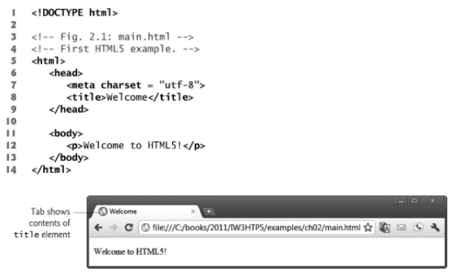

In this unit we will discuss the basics of structuring and designing webpages using HTML and CSS.
We also briefly touch on the fundamentals of the web.
Fundamentals of the Web
Introduction
The internet and world wide web are an integral part of our lives. Most web applications are built using a
client-server architecture.
A Web Server handles requests from a client. A Web Client sends requests to a destination web
server.
A good example of a web client is the current web app you are using or any webpage! A good example of a web
server or servers is the collection of servers at google's data center. Furthermore, applications can become
multitier. Therefore,
they may have a client side, server side and database.
Hyper Text Transfer Protocol (HTTP)
HTTP is the communication protocol between the client side and the web server. Most notably we can see HTTP
appear in browser's URL section (e.g. http:// or https://). HTTP is used to transfer HTML, css and Javascript
files required to handle
and display webpages on the client side.
HTML defines the layout of the webpage. CSS defines the style of the webpage and modifies the layout to adhere
to
a desired look and feel. Javascript handles client side logic and events.
URI and URL
Universal resource identifiers (URI) are used to identify resources on the internet. A special case of these
URIs is called
a URL (Universal Resource Locator) that start with "http://" or "https://". URLs are used to make server-side requests that my involve searching and
database lookups.
Making and Receving Requests
The two most common types of HTTP requests are GET and POST requests. GET requests are commonly used to perform
search
queries are fetch web pages. For instance you can perform a google search using a GET request which appends the
search query
to the URL and performs the search (e.g. "www.google.com/search?q=deitel").
POST requests are commonly used to submit data to a server. This request is commonly used in web forms, where
our responses are saved
using POST requests. POST requests send the data as part of the HTTP message and not as part of the URL. It's
more suitable to handle
larger data.
Hyper Text Markup Language (HTML)
Introduction
HTML and in particular HTML5, is a markup language that defines thre structure and content of Web
documents that are rendered in the browser. HTMl files end with a .htm or .html extension.
Simple Anatomy
Consider the following code snippet for HTML5. (Taken from the textbook)

Line 1 indicates the document type which in this case would be HTML5.
The browser ignore blank or new lines in HTML5 and it's mainly for code readability.
Comments in HTML5 as you can see in lines 3 and 4, start with <!-- and end with -->.
In html we have opening tags (e.g. <p>) and closing tags (e.g. </ p>).
Alternatively, there may be self closing tags (e.g. <img />). Opening tags must
be complemented with a closing tag.
Every html file should contain an html, head and body element.
In our example the html element starts at line 5 and ends at line 14. The head starts at line 6 and ends
at line 9. The body starts at line 11 and ends at line 13.
the html element is essentially the root element of the html file. All other elements or tags
are its children.
The head element contains information about the page such as the page title (line 8) and character set (line 7).
The head can also contain formatting instructions links such as link to a css file.
The body element contains all elements to be displayed on the webpage. For instance,
on line 12 we can see a paragraph element(<p>... </ p>) inside the body element that is also
being rendered within the browser. You can also see the title being rendered on the browser tab as well.
Summary of HTML terminalogy
-
html tag: html elements that can contain other elements (e.g. <p>... </ p>)
or can be self closing (e.g. <img />).
-
Child element: an html element that is contained inside another html element.
-
Tag attributes: Properties that can be set for an html tag. For example, in the image
tag <img src="" alt="" /> the properties src and alt are attributes of the tag. You can set these
properties to specify the source of and give an alternate text placeholder to an image.
Note worthy elements
-
Unordered List: Useful for creating bullet points. For example
you can make an unorder list of fruites using the <ul> tag containing
<li> tags (list items):
<ul>
<li> Apple </ li>
<li> Banana </ li>
<li> Orange </ li>
</ ul>
Which will render the following:
-
Paragraph: Useful for writing a large block of text.
starts with <p> and ends with </ p>. These tags are highly used
throught out this project.
-
Images: This element is useful for rendering images on a webpage.
You can specify the source of the image, alternate text and dimensions. For example,
<img src="path/to/image" alt="some-image" width="200px" height="200px"/>
-
Anchor tags: This element is useful for linking to other pages. For example,
<a href="../../part1/resume.xsl"> resume < /a>, renders a link to my resume page:
resume
-
Tables: This element is useful for displaying structured data onto a webpage.
For example, if I wanted to disable data related to a list of marks and names, I can use html table
to do so. The following table element illustrates an example:
<table border="1">
<thead>
<tr>
<th>Name</ th>
<th>Mark</ th>
< /tr>
</ thead>
<tbody>
<tr>
<td>Alireza Azimi</ td>
<td>90</ td>
< /tr>
<tr>
<td>John Doe</ td>
<td>95</ td>
< /tr>
</ tbody>
</ table>
This will render the following table:
|
Name
|
Mark
|
|
Alireza Azimi
|
90
|
|
John Doe
|
95
|
-
Inputs: html inputs are abundant and very useful in collecting and processing
user inputs. For the purposes of this tutorial here are 6 inputs that I would like to mention:
I would also like to invite you to take a look at w3schools' tutorial on input types: input types
Cascaded Style Sheet (CSS)
Introduction
Cascading style sheets or commonly refered to as CSS, is a technology designed to alter
the presentation and appearance of an html layout. CSS can be applied using inline attributes or
using class attributes referencing css classes either defined in a <style> tag or a style sheet
file. You can use css classes or attributes to alter colors, shapes, format borders and much more.
Simple Anatomy
-
Inline CSS: This type of CSS is defined using the style attribute.
e.g. consider this anchor tag, <a style="color:green;text-decoration:none;" href="#"> Green Link
</a>.
This element along with the style attribute render the following:
Green Link
The css values are separated using semicolmns. The color attribute changes the font Color
and the text-decoration attribute set to none removes all text formatting which in this case
removes the default underline that appears in anchor tag links.
-
Infile and external CSS: The syntax for infile and external css is almost
identical. The only difference is, for infile, the css values are contained within a <style> tag
and for external the css is contained in a separate file and linked using a <link> tag. Here's an
example
of a link tag: <link rel="stylesheet" href="style.css"/>.
The following snippet of code illustrates how we can achieve the same green link from the previous
example using external or infile css.
a{
color: green;
text-decoration: none;
}
Over here the 'a' refers to anchor tags and thus it applies the following styles
in the curly braces to all anchor tags within the page. You can be more specific by specifying classes.
For example make a class called "green-anchor" and specify a style sheet with this class name:
.green-anchor{
color: green;
text-decoration: none;
}
Note how classes in css start with a period ".", and then the class name follows.
To apply this class to an element you can simply just use a class attribute.
e.g. Green Link will yield the same
green link we previously saw.
You can always learn more about css at w3schools: css
Summary
In this Unit we learned about the basics of the internet from the point of view of the web. We discussed what is
html, how it is structured and what uses does it have. We understood what are tags and what are child elements.
We also did a brief overview of common html elements and some interesting html inputs.
We took a look at cascaded style sheets and understood it's syntax and different formats.
Congratulatins on finishing this Unit! When you are ready please take the quiz.